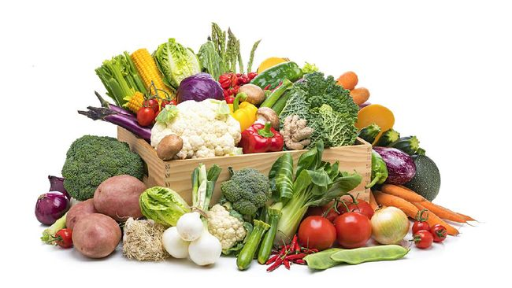

sayuran
Sayuran merupakan bahan pangan yang berasal dari tumbuhan yang memiliki kandungan air tinggi, beberapa diantara sayuran tersebut ada yang dapat dikonsumsi langsung tanpa dimasak, Namun ada juga yang memerlukan proses pengolahan terlebih dahulu seperti direbus, dikukus untuk memaksimalkan kandungan gizi yang terdapat
buah buahan
 Sumber Vitamin, Berbagai jenis vitamin ada di buah. Sumber Air dan Gizi, buah merupakan salah satu sumber air untuk tubuh dan kebutuhan gizi yang dapat meningkatkan metabolisme tubuh. Mencegah penyakit tertentu.
Sumber Vitamin, Berbagai jenis vitamin ada di buah. Sumber Air dan Gizi, buah merupakan salah satu sumber air untuk tubuh dan kebutuhan gizi yang dapat meningkatkan metabolisme tubuh. Mencegah penyakit tertentu.
lauk pauk

Lauk pauk adalah pendamping makanan pokok yang berfungsi untuk sumber zat pembangun tubuh. Lauk pauk biasanya memiliki kandungan protein yang berguna sebagai pembangun dan pengatur bagi tubuh